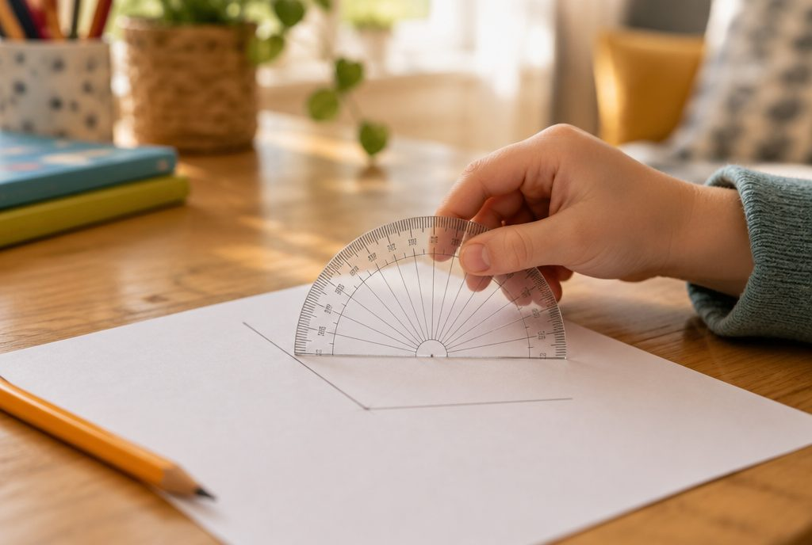

각의 크기는 어떻게 잴까?

문을 조금 열 때와 활짝 열 때, 벌어진 정도가 다르지요? 각이 얼마나 벌어졌는지를 숫자로 나타내는 방법을 배워 봐요.
각의 크기와 1도
각의 두 변이 벌어진 정도를 각의 크기 또는 각도라고 해요. 변의 길이가 길다고 각이 커지는 게 아니라, 많이 벌어질수록 커요.
직각을 똑같이 90으로 나눈 것 하나의 크기를 1도라고 하고 1°라고 써요. 그래서 직각은 90°예요.
직각 두 개를 이어 붙여 한 직선이 되면 180°, 직각 네 개면 한 바퀴로 360°예요.
직각 = 90°, 직각 2개 = 90° + 90° = 180°
이렇게 재요: 각도기 사용법
① 각도기의 중심을 각의 꼭짓점에 맞춰요. ② 각도기의 밑금을 각의 한 변에 맞춰요. ③ 나머지 변이 가리키는 눈금을 읽어요.
각도기에는 안쪽과 바깥쪽 두 줄의 눈금이 있어요. 밑금에 맞춘 변 쪽에서 0부터 시작하는 눈금을 따라 읽어야 해요.
각을 그릴 때는 먼저 한 변을 긋고, 각도기 중심과 밑금을 맞춘 뒤 원하는 눈금에 점을 찍어 꼭짓점과 이어요.
한 변이 오른쪽 0에서 시작하고 다른 변이 안쪽 눈금 65를 가리키면 → 65°
예각과 둔각, 그리고 어림하기
0°보다 크고 직각보다 작은 각을 예각, 직각보다 크고 180°보다 작은 각을 둔각이라고 해요.
각도기를 쓰기 전에 직각(90°)과 비교해서 크기를 먼저 어림해 보세요. 예각인데 눈금이 130이 나왔다면 다른 쪽 눈금을 읽은 거예요.
눈금에 꼭 맞지 않으면 '약 몇 도'라고 말해요.
40° → 예각, 90° → 직각, 125° → 둔각
각도의 합과 차
각도도 자연수처럼 더하고 뺄 수 있어요. 두 각을 붙이면 합, 큰 각에서 작은 각을 떼어 내면 차예요.
계산한 뒤에는 단위 °를 꼭 붙여요.
75° + 40° = 115°, 150° − 65° = 85° / 직선(180°)에서 한 각이 70°이면 나머지는 180° − 70° = 110°
이렇게 알아내요: 삼각형과 사각형의 각의 합
삼각형을 종이로 오려 세 꼭짓점을 찢어 한 점에 모아 보면 한 직선이 돼요. 그래서 삼각형의 세 각의 크기의 합은 180°예요.
사각형은 마주 보는 두 꼭짓점을 선분으로 이으면 삼각형 2개로 나뉘어요. 그래서 네 각의 크기의 합은 180° + 180° = 360°예요.
모르는 한 각은 전체 합에서 아는 각들을 빼서 구해요.
삼각형의 두 각이 50°, 75°이면 나머지 = 180° − 50° − 75° = 55° / 사각형의 세 각이 80°, 100°, 95°이면 나머지 = 360° − 275° = 85°
핵심 낱말
- 각도
- 각의 두 변이 벌어진 정도, 각의 크기
- 1도(1°)
- 직각을 똑같이 90으로 나눈 것 하나의 크기
- 각도기
- 각의 크기를 재는 도구
- 예각
- 0°보다 크고 직각보다 작은 각
- 둔각
- 직각보다 크고 180°보다 작은 각
한 줄 정리
- 직각을 90으로 똑같이 나눈 하나가 1°이고, 각도기로 각의 크기를 재요.
- 예각은 직각보다 작은 각, 둔각은 직각보다 크고 180°보다 작은 각이에요.
- 삼각형의 세 각의 합은 180°, 사각형의 네 각의 합은 360°예요.
학교 교육과정 연결
- [4수03-24] 각의 크기의 단위인 1도(°)를 알고, 각도기를 이용하여 각의 크기를 측정하고 어림할 수 있다.
- [4수03-25] 여러 가지 방법으로 삼각형과 사각형의 내각의 크기의 합을 추론하고, 자신의 추론 과정을 설명할 수 있다.